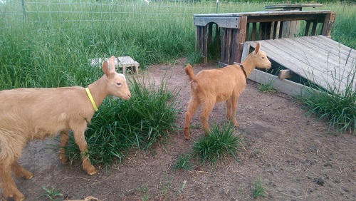
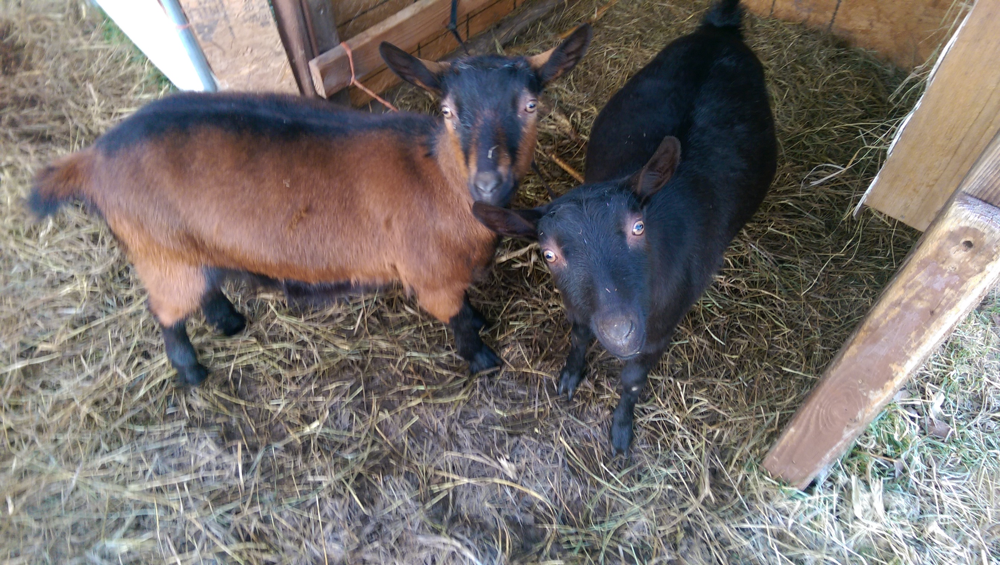
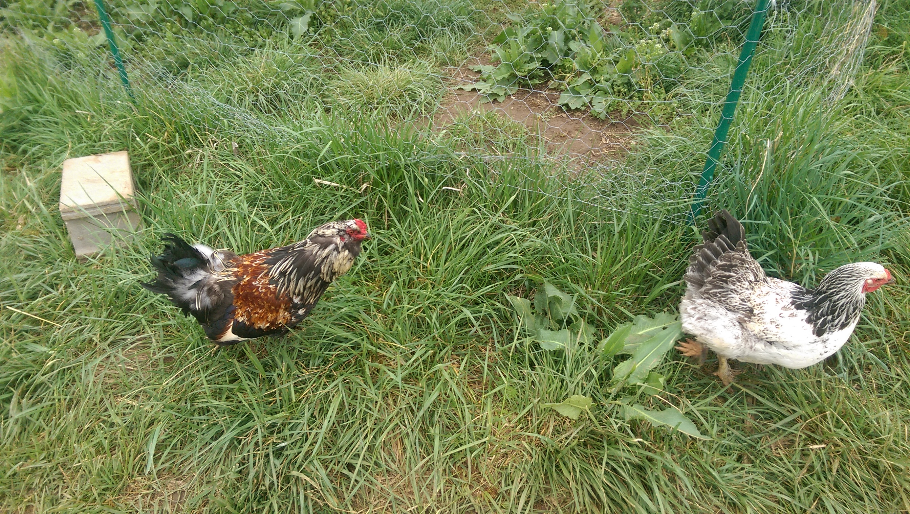

About the Animals
Our Animals
Storm Dancer Farm is home to cattle, goats, and poultry (and some dogs and cats). The breeds were chosen for their hardines, demeanor, and appearance. We produce (or will produce beef, goat milk and cheese, and eggs and chickens (and perhaps some turkeys).
Our Management and Philosophy
We try to utilize pasture as much as possible for livestock feed, as goats and cattle are designed to digest forage well. Our cattle get grass, some hay during the winter if stockpiled pasture runs low, and a daily handful of range cubes (think "cow cookies") to keep them friendly!
Our goats get unlimited access to grass, but the nutritional demands of milking does and even growing kids exceeds what grass alone can provide, so we do feed grain.
Poultry love grass and plants, but cannot digest fiber well enough to be totally grass-fed. So our birds get grain, but we try and give as much range access as possible, both for their health and happiness, and for the bug-eating bonus for us!
| Scottish Highland Cattle | Golden Guernsey Goats | Oberhasli Goats | Chickens | |
|---|---|---|---|---|
| Breed Basics | Highlands are a shaggy, horned breed of beef cattle noted for their gentle nature and hardiness, especially when dealing with the cold. They can handle Missouri summers, though it requires a lot of shade and water. Highlands may be red, black, white, dun, or brindle. | Golden Guernseys are a dairy breed of goat that originated in England, and today the only pure Guernseys are in the UK. They may be any shade of gold, with or without white markings, and often have long "skirts" of hair on their rear legs. They are noted for high-butterfat milk, gentle disposition, and penchance for grazing. | Oberhaslis, also known as Swiss Alpines, are a striking breed of dairy goat. They may be either bay (red-brown with black markings), solid black, or (very rarely) a solid chestnut. "Obers" are friendly, often talkative, and producers of sweet milk with moderate butterfat content. | Storm Dancer Farm has been home to numerous chickens, both egg-layers and meat birds. At the moment there are no chickens on-farm (see "Projects" for details on all the anti-predator measures we're taking now...). Favorite breeds have included Jumbo Cornish Rock X (the BEST meat birds around!), Light Brahmas, Ameraucanas, Golden Comets, and Red Broilers. |
| Pictures! |  |
 |  |  |
| For more information... | Highland cattle at the Livestock Conservancy Heartland Highland Cattle Association |
Golden Guernsey Goats at the British Goat Society Guernsey Goat Breeders of America |
Oberhasli goats at the Livestock Conservancy Oberhasli Breeders of America |
Ameraucanas Light Brahmas Jumbos Red Broilers Golden Comet |